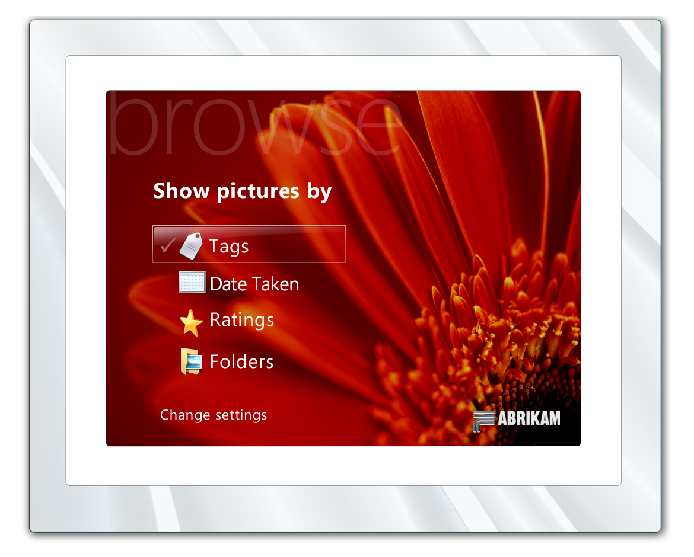
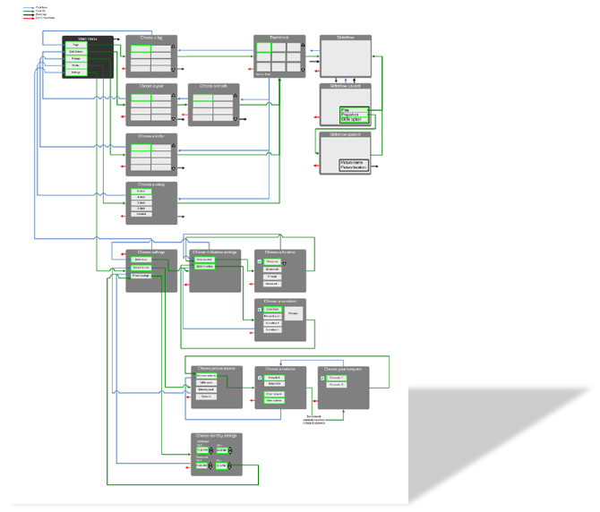

CONNECTED PHOTO DISPLAY
The wireless photo frame was an early connected home device that allowed users to display their digital photos without cables or manual transfers. It connected to home WiFi networks and pulled photos from computers and online services automatically.
The design challenge was creating an experience simple enough for non-technical users while enabling powerful wireless connectivity features.
FRAME HARDWARE
Designed the physical interaction model including the frame hardware and dedicated remote control.

INTERFACE DESIGN
Created the on-screen user interface for browsing photos, configuring settings, and managing network connections.


NETWORK CONFIGURATION
Designed the WiFi setup experience to be simple and approachable for users who may not be familiar with network configuration.

INTERACTION FLOW
Developed comprehensive interaction flows mapping out all user journeys through the device.

IMPACT
- Designed complete hardware-software experience
- Created intuitive WiFi setup for non-technical users
- Developed on-screen UI and remote control interaction
- Pioneered connected home device UX patterns
- Shipped as Microsoft consumer hardware product